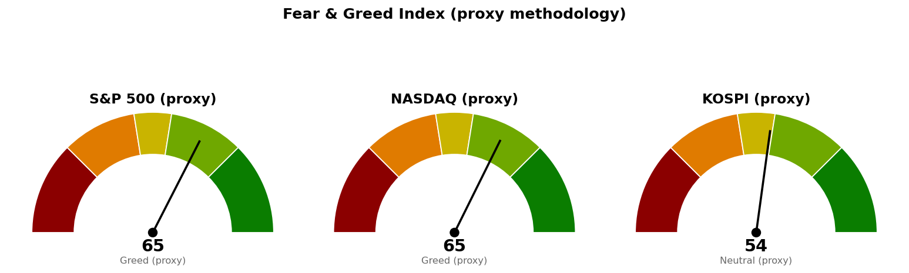

이 브리핑은 참고 정보이며 투자자문이 아닙니다. 종목·업종 판단은 본인 책임 하에 하시기 바랍니다.
| 지수 | 종가 | 등락 | 기준일 |
|---|---|---|---|
| S&P 500 | 7,718.60 | -0.38% | 9월 4일 (미국 직전 거래일) |
| 나스닥 종합 | 26,506.99 | -0.29% | 9월 4일 (미국 직전 거래일) |
| 코스피 | 7,128.43 | +1.90% | 9월 8일 |
| 닛케이 225 | 66,445.13 | +0.07% | 9월 8일 |
미국은 9월 7일이 휴장이어서 가장 최근 종가가 9월 4일 자료입니다. 코스피는 오늘 장중 저가 7,018.53에서 고가 7,141.04까지 올라 고가 부근에서 마감했고, 닛케이는 장중 65,763.11까지 밀렸다가 회복해 보합으로 끝났습니다. 아시아 두 지수의 폭이 크게 갈렸다는 점에서 오늘 상승은 지역 전반이 아니라 한국 쪽 수급에 치우친 움직임입니다.
섹터 상대강도는 미국 SPDR 섹터 ETF 기준이며, 한국·일본은 지수 등락만 제공됩니다.
| 구분 | 섹터 | ETF | 등락 |
|---|---|---|---|
| 주도 | 기술 | XLK | +0.70% |
| 주도 | 산업재 | XLI | +0.41% |
| 주도 | 유틸리티 | XLU | +0.12% |
| 부진 | 헬스케어 | XLV | -1.04% |
| 부진 | 커뮤니케이션 서비스 | XLC | -1.19% |
| 부진 | 경기소비재 | XLY | -1.33% |
11개 섹터 중 오른 것은 세 개뿐이고, 그중 유틸리티는 +0.12%로 사실상 제자리입니다. 실질적으로는 기술과 산업재 두 섹터가 지수 하락을 방어한 구도입니다. 반대편에서는 경기소비재 -1.33%, 커뮤니케이션 서비스 -1.19%로 소비·광고 관련 수요에 연동되는 쪽이 가장 많이 밀렸고, 금융 -0.79%, 에너지 -0.87%도 함께 내렸습니다. 지수 하락폭(-0.38%)보다 대부분 섹터의 하락폭이 큰 것은 시가총액 상위 기술주가 지수를 떠받쳤다는 뜻이며, 이런 구도에서는 지수만 보고 시장 체력을 판단하기 어렵습니다.
① 엔비디아 협력사 위스트론, 15억 달러 규모 해외 주식 매각 발표 후 주가 하락 ([CNBC, 9월 8일](https://www.cnbc.com/2026/09/08/nvidia-supplier-wistron-share-sale.html)) AI 서버 조립을 맡는 대만 협력사가 대규모 증자에 나섰다는 것은 증설 자금 수요가 여전하다는 신호지만, 발표 직후 주가는 하락했습니다. 기존 주주 지분이 희석되는 부담을 시장이 먼저 반영한 것으로, AI 공급망 종목의 주가가 더 이상 수주·증설 소식만으로 오르지 않는 국면이라는 점을 보여줍니다. 오늘 코스피 상승도 반도체 비중이 큰 시장인 만큼, 이 흐름은 국내 관련주에 직접 걸리는 사안입니다.
② 반도체 주식 투자자 경계 — 환율 흐름이 추가 약세를 예고할 수 있다 ([MarketWatch, 9월 7일](https://www.marketwatch.com/story/chip-stock-investors-beware-these-charts-could-warn-of-further-weakness-ahead-1bd890cc?mod=mw_rss_topstories)) 반도체 종목으로 들어오고 나가는 자금의 방향을 통화 시장에서 먼저 읽을 수 있다는 지적입니다. 미국에서 기술 섹터가 유일한 주도 섹터인 지금, 그 기술 섹터의 핵심인 반도체에 경계 신호가 붙는다면 지수를 방어하던 한 축이 사라진다는 의미입니다. ①번 뉴스와 방향이 같다는 점에서 개별 종목 이슈가 아니라 업종 전반의 자금 흐름 문제로 보는 편이 맞습니다.
③ 이번 주 미국 증시는 물가지표가 지배 — 휴일로 단축된 한 주 ([CNBC, 9월 7일](https://www.cnbc.com/2026/09/07/here-are-the-3-big-things-were-watching-in-this-holiday-shortened-trading-week.html)) 9월 7일 휴장으로 거래일이 줄어든 데다 물가지표 발표가 예정돼 있어, 발표 전까지는 거래량이 얇은 상태에서 가격이 크게 움직일 수 있습니다. 미국의 공포·탐욕 지표가 65.0(탐욕)으로 이미 낙관 쪽에 서 있어, 물가지표가 예상과 어긋날 경우 되돌림의 폭이 커질 수 있는 위치입니다. 구체적 발표 일자는 이번 브리핑에서 사용한 자료로 확인하지 못했으므로, 날짜는 별도 매크로 확인이 필요합니다.
| 시장 | 점수 | 판정 |
|---|---|---|
| S&P 500 | 65.0 | 탐욕 |
| 나스닥 | 64.6 | 탐욕 |
| 코스피 | 54.3 | 중립 |
세 수치 모두 원본 지표가 아니라 가격·변동성·안전자산 흐름으로 대신 계산한 값(프록시)입니다. 미국은 변동성 항목이 82.3으로 가장 높은데, 이는 변동성지수(VIX, 시장이 예상하는 향후 30일 변동폭)가 15.3으로 낮게 유지된 결과입니다. 즉 미국의 탐욕 판정은 주가가 크게 올라서라기보다 시장이 앞으로의 흔들림을 거의 예상하지 않고 있다는 데서 나옵니다. 코스피는 54.3으로 중립이며, 오늘 +1.90% 상승에도 아직 낙관 구간에 들어서지 않았습니다.

미국 기술·산업재 두 섹터가 지수를 방어하는 좁은 시장이고, 그 방어축인 반도체에 자금 조달과 자금 흐름 경계 기사가 같은 주에 겹쳤습니다. 미국 쪽 심리는 이미 탐욕(65.0)에 서 있어 물가지표를 앞두고 되돌림에 취약한 위치이며, 반대로 코스피는 오늘 +1.90% 올랐음에도 심리는 중립(54.3)이라 상단이 곧바로 막힐 자리는 아닙니다. 다만 코스피 지표는 위에 적은 계산상 한계가 있어 그대로 받아들이기 어렵습니다.
본 자료는 공개 데이터에 기반한 참고 정보이며 투자자문이 아닙니다. 최종 판단과 책임은 투자자 본인에게 있습니다.